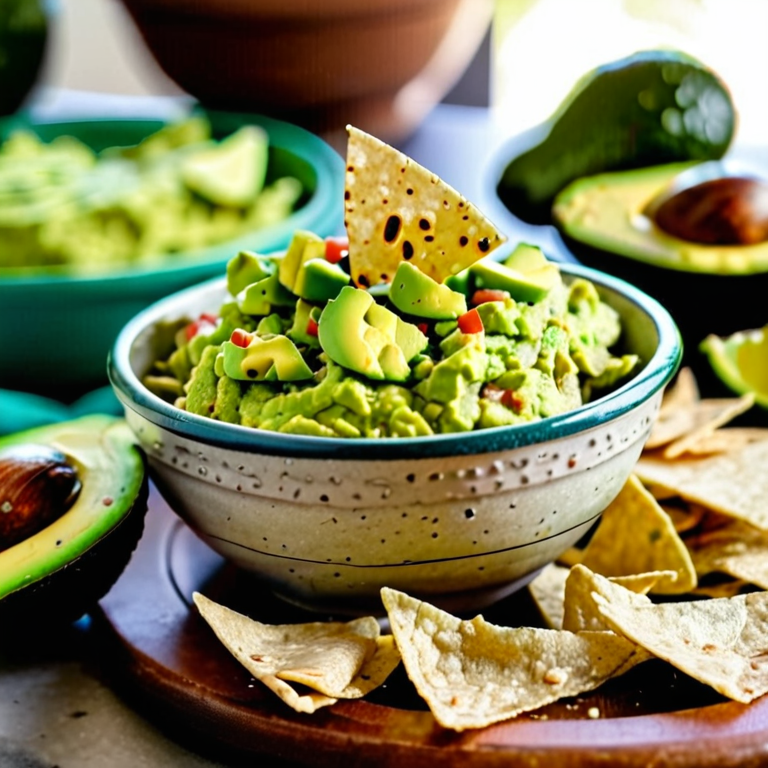

Guacamole

Description
Hearty and healthy low-salt guacamole; a delicious way to get more fiber into your diet.
Ingredients
2 very ripe avacados
1/2 roma(plum) tomato, diced
1/2 jalapeño, seeded and diced
1/8 cup diced white onion
1/2 lime, juiced
1/8 teaspoon salt
1/4 teaspoon black pepper
1/4 teaspoon garlic powder
Steps
Slice the avacados in half, remove the pit, then use a large spoon to scoop out the flesh. In a small bowl, mash them using a fork.
Add the tomato, jalapeño, onion and mix with fork.
Use the fork to juice the lime into the bowl, by squeezing the fruit with one hand and twisting the fork inside with the other hand.
Add salt and spices, mix again with the fork until everything is evenly distributed.
Serve with corn tortilla chips.
Return to Home